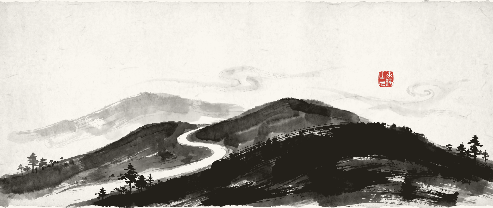

One source, many forms · A digital-humanities reading of Journey to the West
Open source · dual licence MIT + CC BY-NC 4.0

Read Journey to the West — with a map this time
100 chapters, 615 essays on chapters and themes, 87 explorable visualisations, 133 data dimensions — not another book you cannot finish, but a map you can look up, cite and reproduce.
615essays
87visualisations
133dimensions
34analysis scripts
Read it allall 100 chapters
Every one of the 100 chapters is covered, alongside 500+ essays on characters, themes, culture, poetry and personal readings. Looking for one chapter? It is one click away.
Character networks, an 81-trial emotion heatmap, the pilgrimage route, a danmaku museum, conversations with famous readers — the story is no longer only text; it is a set of pages you can click.
Drawn with D3.js / Three.js · produced by 34 analysis pipelines · embedded data fallback, so file:// works too
Take itno friction
No sign-up, no login, no network: clone the repo and double-click. Or install the desktop app and read offline — installers for three platforms, with auto-updates.
Windows · macOS · Linux installers · pure static, opens from file:// · the desktop app bundles the whole site offline
Open it and read — no sign-up
The online site covers all 100 chapters, the character studies, the topic essays and every visualisation; the desktop app keeps the whole site on your machine.
Code & scripts MIT · text content CC BY-NC 4.0 (attribution, non-commercial) · cite via CITATION.cff
For researchers and institutions: four hard assets
Citable · Verifiable · Reproducible · Reviewable — each one points at a path you can open, not a slogan.
Journey to the West flyer · A4 · Back
github.com/1273984347/xiyouji
Citable
A formal citation format, an academic bibliography, and a 500-year history of interpretation. You never have to cite a site because someone said it was good.
CITATION.cff (BibTeX / APA / Chicago) · academic paper index · criticism history (9 critics · 500 years of interpretation · three teachings · inner alchemy)
Verifiable
Every quoted line is matched character-by-character against the full text; an unmatched quote blocks the commit. An AI cannot invent a quote here, and the gates do not let it through.
Hard quote verification + 49 automated gates · per-file provenance (source / model / date / verification) · the gates guarantee fidelity, not judgement: they prove nothing was invented, not that it is worth reading
Reproducible
All analysis scripts and datasets are open, so anyone can re-run them. Every artefact on the site derives from a single source of truth and can be compared byte by byte.
AI agents draft under document skeletons, term rules and track labels; a human editor reviews every file before it lands. The division of labour is written down, not hidden.
Five tracks (general / academic / teaching / personal / cross-disciplinary) · per-file provenance and verification status · final responsibility stays with the editor
Contents · eight collections
01
Chapters
Original text + deep readings + notes
02
Characters
Protagonists · Guanyin · monster lineages · women
03
Themes
Heaven · 81 trials · the true and false Monkey King
04
Culture
Composition history · Buddhism & Taoism · Ming allegory · editions
05
Poetry
Poems and couplets from the original
06
Essays
44 personal readings from a modern angle
07
Method
Decision models · role thinking · metacognitive maps
08
Visualisations
87 interactive pages in D3 / Three.js
Online site
Nothing to install — open and read. The homepage reaches any chapter, character, topic or visualisation.
https://1273984347.github.io/xiyouji/
Desktop download
Installers for Windows, macOS and Linux; it checks for updates on launch and reads everything offline.
github.com/1273984347/xiyouji/releases/latest
Feedback & corrections
Found an error, or want to argue with a reading? Open an issue — every one of them is read.
github.com/1273984347/xiyouji/issues
Citation format · CITATION.cff
@misc{xiyouji,
title = {Journey to the West: One Source, Many Forms},
author = {The Journey to the West Project},
year = {2026},
url = {https://1273984347.github.io/xiyouji/}
}
Text is CC BY-NC 4.0 (attribution, non-commercial) · cite and adapt per CITATION.cff
Provenance & licence: content is drafted by AI agents and reviewed file by file by a human. Automated gates secure what machines can judge (quotes are real, structure is consistent, terms are consistent); they do not certify judgement — whether an argument is worth reading is the editor’s call.
Journey to the West flyer · A4 two-sided · 2026-10-23 (W896) · source: written by hand (drafted by an agent)1273984347.github.io/xiyouji